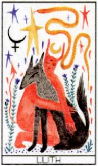

LIGHT, SHADOW & EVERYTHING WITHIN
光も、影も、
あなたの一部。
リリファー・タロットの世界へ。
80枚のカードに描かれた物語と象徴を、
日本語でゆっくり読み解くための手引き。
THE LILIFER TAROT ✦ JAPANESE READING COMPANION

LILITH & LUCIFERふたつの力、ひとつの調和。
✦ 直感をひらく。 自分のリズムで読む。 ✦
THE CARD COLLECTION
一枚から、ひもとく。
大アルカナ22枚 ＋ 特別な2枚
小アルカナ56枚
カードを選ぶと解説が開きます
✧
該当するカードがありません
検索語や種類を変えてお試しください。
お気に入りは各カードの解説画面から保存できます。
A LANGUAGE OF SYMBOLS
絵の中の、小さな手がかり。
元素、色、数、そして生きもの。
原著の象徴体系を、気になる項目からお読みください。
植物・石・身体の対応は象徴上の記述です。摂取・使用や治療を勧めるものではありません。カードの健康に関する語句も、診断や将来の健康を示すものではありません。
LAY OUT YOUR QUESTIONS
問いに、かたちを。
解説書に掲載された6つの展開法。
図の番号順にカードを置き、それぞれの問いを読み解きます。
意味は、あなたを縛るものではなく、
あなたの直感を導くもの。